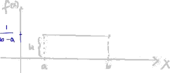
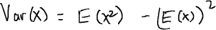
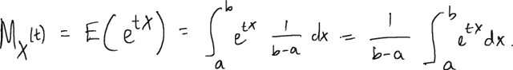

The first figure following the title shows a panoramic view of the entire lecture board. The following note presents figures and transcript in the order they appear in the lecture. The RIGHT figure shows the line that is being discussed, and the LEFT figure shows that line in the context of the panorama.
Uniform Distribution (2)
Hi everyone.
This is lesson number twenty minus two from a tutorial path on probability and in this lesson we study the uniform distribution.
This is lesson number twenty minus two from a tutorial path on probability and in this lesson we study the uniform distribution. If we have a random variable X that follow a uniform distribution, X follows the uniform distribution with parameters a and b. Here a and b are the lower and the upper limits of the values that the random variable X can take.
A uniform random variable is equally likely to take any anybody between it's lower limit and it's upper limit.
A uniform random variable is equally likely to take any anybody between it's lower limit and it's upper limit. To explain that, I'm going to draw this graph. Let's say that's X and then that's the PDF X. You said that random variable X takes value between a and b. Since it's equally likely to take any value between a and b, it has a plot PDF. The PDF is flat. In other words, it's a constant function. We know that the area under the PDF is always equal to one, so that we have valid probability density function. That means the area of this rectangle here should be equal to one. But we know area is the base times height. We can calculate the length of that height that we need so that the area under this curve, the area of the rectangle is equal to one.
This base of the rectangle has a length of B minus A.
This base of the rectangle has a length of B minus A. Therefore, for b minus a times height should give us an area equal to one, which implies that h should be equal to 1 over b minus a.
The value taken by the PDF after the uniform distribution, from the lower limit a to the upper limit b is 1 over b minus a.

In other words, that's the PDF. The PDF random variable that follows the uniform distribution a to b equal 1 over b minus a, or values of X between a and b.
Now that we have the PDF, we're going to derive the CDF F effects. Let me actually write it. The CDF is going to be... I'll show you how to get that Zerofxlessthana equalx minus a over b minus a. If X is between a and b, it's 1fxgreaterthanb. That's the CDF.
We also show that the expected value is b plus a over 2 or a plus b over 2. That's actually the mid point. So it says, since the PDF is plot and constant, the expected value is going to be right at the middle of lower, between the lower limits and the upper limit, which is a plus b over 2 or b plus a over 2. The variance of the random variable X is going to be equal to b minus a squared over 12. Finally, the MGF, the moment generating function of a uniform random variable, is equal to each of the b times t minus each of the a times t over b minus a times t.
The rest of this lesson is going to be showing you how to get this CDF expected volume variance and momentarily function.
Let's find the CDF.
Let's find the CDF. CDF of a random variable X is equal to the probability that random variable X takes a value less than or equal to little x.
Let me actually draw that picture again so that I can explain things better. We have a here, b, uniform distribution takes any value between a and b, equally likely and height or the density function has a value equal 1 over b minus a. When the value of X is less than the lower limit a, then the CDF is equal to zero.
The reason for that is there's no chance that the random variable X can take value less than little x if, little x is less than a. That is because X cannot take values less than a. That's equal to zero. When X is between a and b, then the CDF is the integral from negative infinity to X of the PDF F effects tx, but the PDF cannot take any value less than a.
Instead of starting from negative infinity, I can set the lower limit of this integral to be a, so that I have integral from a to X of f effects dX, but f effects is 1 over b minus a, for values of X between a and b.
This is 1 over b minus a du.
Now, this integral is equal to u over b minus a, lower limit a, upper limit X. When you plug in the upper limit and the lower limit you get X over b minus a minus a over b minus a. That is equal to X minus a over b minus a. That's the CDF for values of X between a and b. It turns out that the CDF... what's the CDF at? X is equal to b. The CDF and X equal b if fX,b, plug in b in this equation, then you have b minus a over b minus a equal 1. With that in mind, we can actually just write the CDF when X is greater than b.
When X is greater than b, the CDF is equal to one.
When X is greater than b, the CDF is equal to one. F effects is equal to one.
I could have actually found that CDF in a much easier way than the way I did with integrals.
I could have actually found that CDF in a much easier way than the way I did with integrals. If this is the point X, the probability that random variable X takes a value less than or equal to little x, is equal to the area of that rectangle.
You really didn't need to do the integral. If you calculate the area of that rectangle, the base as a value of X minus a times height, which is 1 over b minus a, that gives you X minus a over b minus a.
You really didn't need to do the integral. If you calculate the area of that rectangle, the base as a value of X minus a times height, which is 1 over b minus a, that gives you X minus a over b minus a. Expected value of the random variable X is the integral overall the support of the random variable X. Let's say the support for X is script X of X times f effects dx. We know actually the support is from a to b, any value from the lower limit to the upper limit. X times f effects is 1 over b minus adx. 1 over b minus a is a constant just like to X, so I can take it outside of the integral and I have integral a to b, not X, dx. That's equal to 1 over b minus a minus x squared over 2, lower limit a, the upper limit b.
Plug in the lower limit and the upper limit here.
Plug in the lower limit and the upper limit here. You would find out this is equal to 1 over b minus a times b squared minus a squared over 2. b squared minus a squared is the difference of two squares, which I can rewrite as b minus a times b plus a then I have divided by two.So
b minus a cancels out b minus a therefore I am left with b plus a over 2.

The variance of the random variable X is the second moment minus the first moment square. We know the first moment.First
moment is b plus a over 2.
moment is b plus a over 2. We can just find the second moment and then we use the first moment that we have here to calculate the variance. Second moment is the integral from a to b. In this case of X squared, f effects dx. That is equal to the integral a to b. X squared plus 1 over b minus adx. Again, 1 over b minus a is a constant with respect to X, so that can be outside of the integral from a to b, x squared dx. That is equal to 1 over b minus a times X cubed over 3, evaluated from the lower limit a to the upper limit b.
This is b minus a times by... If you plug in the upper limit and the lower limit, you get b cubed minus a cubed over 3.
b cubed minus a cubed is the difference of two cubes.The
b cubed minus a cubed is the difference of two cubes.The difference of two cubes can be written as b minus a... revise that from your algebra, if you don't remember. b minus a times b squared plus ab plus a squared over 3. Here again, b minus a here cancels out b minus a up here.
Therefore we are left with b squared plus a times b plus a squared over 3.
That's the second moment.
That's the second moment. To find the variance, I need to subtract the first moment squared from the second moment. Second moment is b squared times ab plus ab plus a squared over 3 minus the square of the first moment. The first moment is b plus a over 2.
This is b squared plus a times b plus a squared minus b squared plus 2ab plus a squared over 4.
This common factor is 12. 12 over 3 is four, so we have four times b squared plus a times b plus a squared minus 12 over 4 is 3. So 3 times b squared plus 2ab plus a squared. That is equal to 4b squared plus 4 times ab plus 4a squared minus 3b squared minus 6 times ab minus 3a squared.
All quantity divided by twelve.
Again, 4b squared minus 3b squared is b squared. 4ab minus 6ab is minus 2ab. 4a squared minus 3a squared plus a squared over 12.
b squared minus 2ab plus b squared is b minus a squared over 12. That's the variance of the random variable X which follows a uniform distribution between the lower limit a and the upper limit b. We found the CDF expected value to variance.
We're going to go ahead and find the moment generating function.

We're going to go ahead and find the moment generating function. The MGF MX of t is the expected value of e to the t times X. That is equal to the integral over all the support of the random variable X, which is from hb and of e to the t times X times f effects dx, but f effects is one over b minus adx. I can again take one over b minus a outside of the integral and multiply it by the integral a to b of e to the t times Xdx.
That is equal to 1 over b minus a times ato the t times X over t, lower limit a, upper limit b.
That's equal to one over b minus a times e to the t times b minus e to the t times a over t.
When you rewrite this, you will find out that the MGF is e to the t times b minus e to the t times a over b minus a times t. That's the MGF of a uniform random variable.